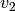
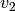

RectGrid¶
-
class
odl.discr.grid.RectGrid(*coord_vectors)[source]¶ Bases:
odl.set.sets.SetAn n-dimensional rectilinear grid.
A rectilinear grid is the set of points defined by all possible combination of coordinates taken from fixed coordinate vectors.
The storage need for a rectilinear grid is only the sum of the lengths of the coordinate vectors, while the total number of points is the product of these lengths. This class makes use of that sparse storage scheme.
See
Notesfor details.Attributes: coord_vectorsCoordinate vectors of the grid.
examplesGenerator creating name-value pairs of set elements.
extentReturn the edge lengths of this grid’s minimal bounding box.
is_uniformTrueif this grid is uniform in all axes, elseFalse.is_uniform_byaxisBoolean tuple showing uniformity of this grid per axis.
max_ptVector containing the maximal grid coordinates per axis.
meshgridA grid suitable for function evaluation.
mid_ptMidpoint of the grid, not necessarily a grid point.
min_ptVector containing the minimal grid coordinates per axis.
ndimNumber of dimensions of the grid.
nondegen_byaxisBoolean array with
Trueentries for non-degenerate axes.shapeNumber of grid points per axis.
sizeTotal number of grid points.
strideStep per axis between neighboring points of a uniform grid.
Methods
append(*grids)Insert gridsat the end as a block.approx_contains(other, atol)Test if otherbelongs to this grid up to a tolerance.approx_equals(other, atol)Test if this grid is equal to another grid. contains_all(other)Test if all elements in otherare contained in this set.contains_set(other)Test if otheris a subset of this set.convex_hull()Return the smallest IntervalProdcontaining this grid.corner_grid()Return a grid with only the corner points. corners([order])Corner points of the grid in a single array. element()An arbitrary element, the minimum coordinates. insert(index, *grids)Return a copy with gridsinserted beforeindex.is_subgrid(other[, atol])Return Trueif this grid is a subgrid ofother.max(**kwargs)Return max_pt.min(**kwargs)Return min_pt.points([order])All grid points in a single array. squeeze([axis])Return the grid with removed degenerate (length 1) dimensions. -
__init__(*coord_vectors)[source]¶ Initialize a new instance.
Parameters: - vec1,…,vecN :
array-like The coordinate vectors defining the grid points. They must be sorted in ascending order and may not contain duplicates. Empty vectors are not allowed.
Notes
In 2 dimensions, for example, given two coordinate vectors
the corresponding rectilinear grid
 is the set of all
2d points whose first component is from
is the set of all
2d points whose first component is from  and the
second component from :
and the
second component from :
Here is a graphical representation:
: : : : : : 1 -x----x--------x-... | | | 0 -x----x--------x-... | | | -1 0 2
Apparently, this structure can represent grids with arbitrary step sizes in each axis.
Note that the above ordering of points is the standard
'C'ordering where the first axis () varies slowest.
Ordering is only relevant when the point array is actually created;
the grid itself is independent of this ordering.Examples
>>> g = RectGrid([1, 2, 5], [-2, 1.5, 2]) >>> g RectGrid( [ 1., 2., 5.], [-2. , 1.5, 2. ] ) >>> g.ndim # number of axes 2 >>> g.shape # points per axis (3, 3) >>> g.size # total number of points 9
Grid points can be extracted with index notation (NOTE: This is slow, do not loop over the grid using indices!):
>>> g = RectGrid([-1, 0, 3], [2, 4, 5], [5], [2, 4, 7]) >>> g[0, 0, 0, 0] array([-1., 2., 5., 2.])
Slices and ellipsis are also supported:
>>> g[:, 0, 0, 0] RectGrid( [-1., 0., 3.], [ 2.], [ 5.], [ 2.] ) >>> g[0, ..., 1:] RectGrid( [-1.], [ 2., 4., 5.], [ 5.], [ 4., 7.] )
- vec1,…,vecN :